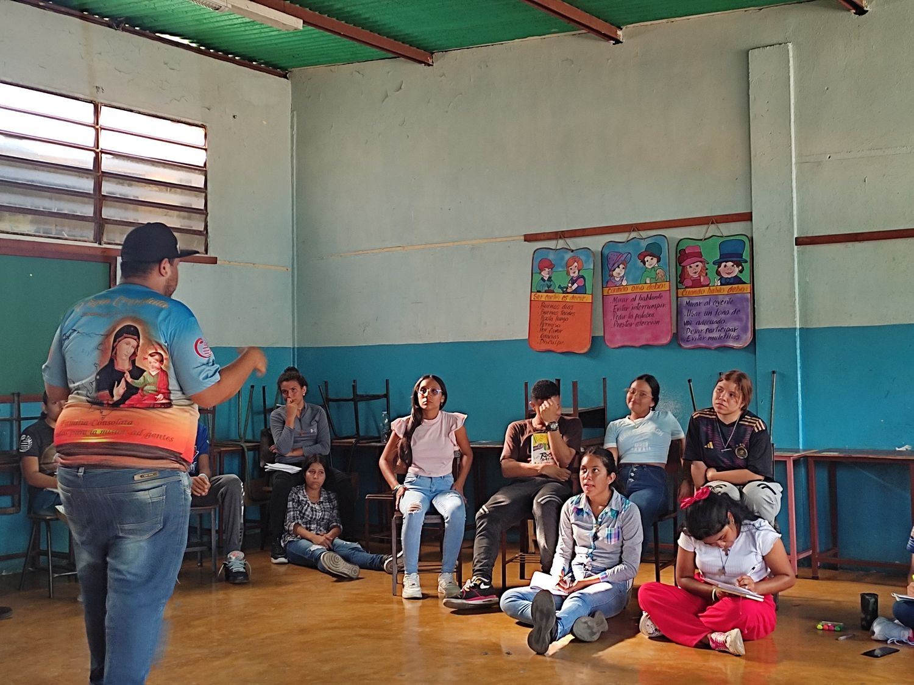
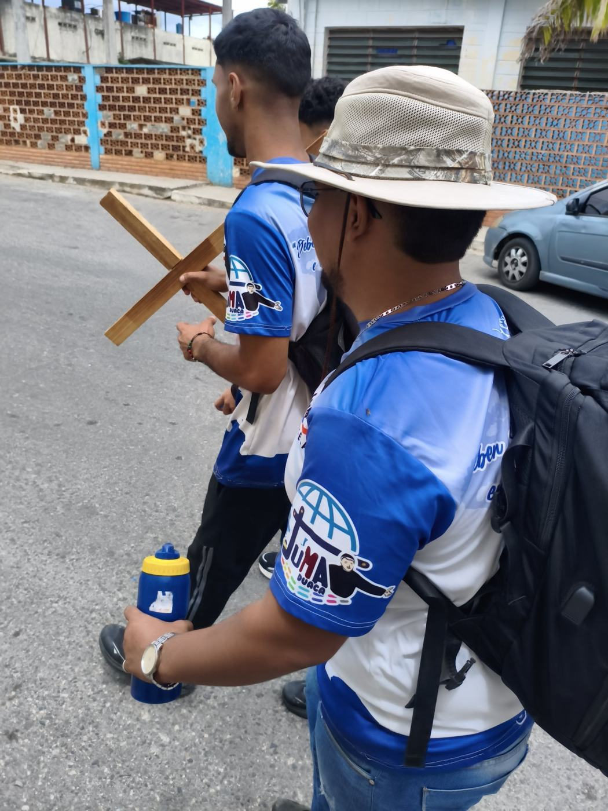
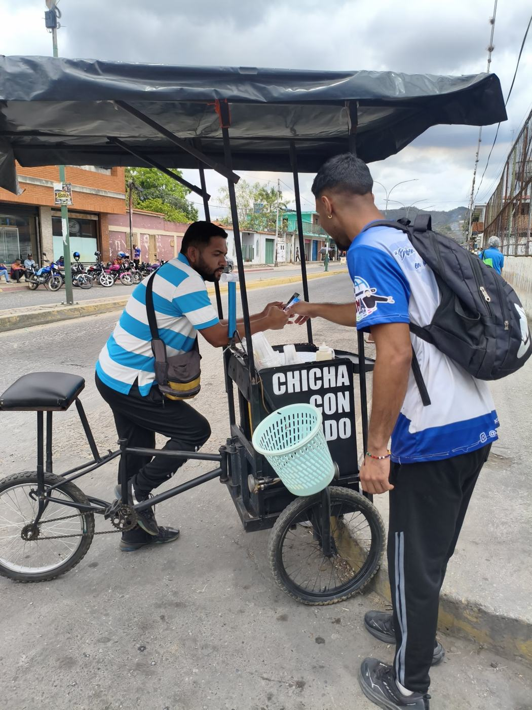

Formación
Crecemos en la fe, la doctrina, la Biblia, la misión y el plan vocacional, para descubrir quiénes somos como hijos de Dios.

San José Allamano
Somos el movimiento juvenil de los Misioneros de la Consolata en Duaca. Cada domingo nos reunimos para orar, formarnos y salir a la misión.


Somos un movimiento juvenil del Instituto de los Misioneros y Misioneras de la Consolata, con un tinte vocacional y guiado por el carisma de San José Allamano.
Nos preparamos para la evangelización y la misión ad gentes, con especial atención a otros jóvenes y a las comunidades, en los proyectos del instituto y de la Iglesia local.

Fortalecer y expandir el movimiento juvenil en las misiones donde están presentes los Misioneros de la Consolata en Venezuela, y fomentar el espíritu misionero en los jóvenes a través de su proyecto de vida.
Proyectarnos como un movimiento juvenil para la formación, la evangelización y la misión entre los jóvenes y las comunidades, de modo que surjan nuevas vocaciones misioneras.
Promover en los jóvenes espacios de formación, evangelización y misión a través del carisma de los Misioneros de la Consolata.


Oramos, nos formamos y compartimos. Llega temprano, trae tu alegría y, si quieres, ven con un amigo.
Escuchamos en silencio a quien habla y cuidamos un ambiente de armonía, alegría, unión y respeto.
Las fechas se anuncian en el canal de WhatsApp y en nuestras redes.
Seguir el canal de WhatsApp
Así organizamos nuestra formación mensual: crecer en la fe, salir a la misión, animar la comunidad y compartir con alegría.

Crecemos en la fe, la doctrina, la Biblia, la misión y el plan vocacional, para descubrir quiénes somos como hijos de Dios.
Llevamos la alegría del Evangelio con nuestro testimonio, sirviendo a los demás y mostrando el amor de Cristo.

Nutrimos la vida comunitaria con oración en grupo, reflexión, música y celebraciones litúrgicas.

Juegos, deporte y convivencia para forjar amistades sinceras. La fe también es alegría.
JUMA nace de una familia misionera. Conocerla ayuda a entender por qué salimos, oramos y servimos como lo hacemos.
El Instituto de los Misioneros de la Consolata fue fundado por San José Allamano en 1901. Se dedica a anunciar el Evangelio a los pueblos que aún no lo conocen, la misión ad gentes, y a promover la dignidad de cada persona.


“Si tu corazón no arde de amor cuando haces misión, no te emocionas, permaneces indiferente, deberías cuestionarte si este carisma es para ti.”


Cada año de formación tiene un color y una franela que representa un continente. Toca un banderín para ver sus temas.
Cada área cuenta con un encargado y un auxiliar, para que el trabajo sea ordenado y siempre tenga continuidad.

Retiros, oración y meditación, charlas de fe y devoción a los sacramentos, en especial la Eucaristía y la Reconciliación.
Prepara la Santa Misa: lecturas, oraciones y ministros, para que cada celebración sea un encuentro con Cristo.
Anima liturgias, encuentros y eventos especiales con cantos que se vuelven oración.
Juegos, dinámicas, paseos y deporte que fortalecen la amistad y muestran que la fe también es gozo.
Visitamos a jóvenes y familias para escuchar y acompañar, y para que el movimiento sea un segundo hogar.
Voluntariado y caridad: asilos, hospitales, recolección de alimentos y proyectos comunitarios.
Diseña el plan de formación de reuniones y talleres, y prepara a los líderes del grupo.
La columna del movimiento: espacios, sonido, alimentos, transporte y materiales.
Decora los espacios con telas, luces y símbolos para que todos se sientan bienvenidos.
La voz digital del movimiento: evangelizar con imágenes, videos y textos.
Un asesor general acompaña al movimiento. La coordinación general, la subcoordinación, la secretaría, la tesorería y la animación forman la directiva, que se renueva cada tres años por elección.
De las capillas de Duaca a las peregrinaciones y encuentros con jóvenes de todo el mundo.


Deja un saludo, una petición de oración o un testimonio. Un coordinador lo revisa antes de publicarlo.

Llena tu planilla de inscripción en unos minutos y te esperamos el domingo para empezar este camino juntos.